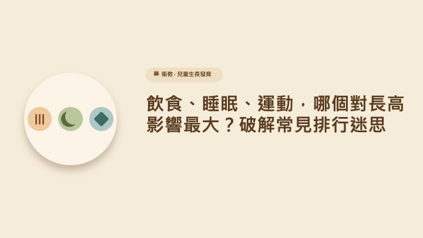

← 回文章列表
衛教
飲食、睡眠、運動，哪個對長高影響最大？破解常見排行迷思
家長為了幫孩子長高，往往買了各式各樣的營養品，或是逼孩子每天跳繩上百下。到底「飲食、睡眠、運動」這三劍客，哪一個才是真正的長高關鍵？有沒有所謂的「第一名」？
答案是：它們不是競爭關係，而是「連鎖反應」！
這三者在科學上是環環相扣的，缺了任何一角，其他兩項的效果都會被打對折。我們來看看它們是如何協同運作的：
【優質飲食】 ──提供原料──> 【骨骼肌肉生長】
│ ▲
促進運動表現 提供生長激素
▼ │
【縱向運動】 ──加深睡眠──> 【深度睡眠 (分泌生長激素)】
1. 睡眠：生長激素的「製造工廠」
生長激素在人體內是呈脈衝式分泌的。一天之中分泌量最高的時候，是在晚上 10 點到凌晨 2 點，且必須在深度睡眠狀態下。
迷思： 「睡飽 8 小時就好，幾點睡沒關係？」
事實： 熬夜會錯過生長激素分泌的最高峰，即使事後睡再久，效果也無法完全彌補。
2. 飲食：長高所需的「建築材料」
生長激素再多，如果沒有足夠的建材，骨頭也無法延伸。
重點： 補鈣（提供骨骼硬度）和補蛋白質（提供骨骼延展與肌肉原料）同樣重要。
地雷： 糖分是生長激素的隱形殺手。 喝下一杯含糖飲料，會讓血糖飆升，進而抑制生長激素分泌長達 2-3 小時。
3. 運動：拉長骨骼的「重力刺激」
適度的運動能刺激生長板的軟骨細胞分裂。
推薦： 具有「縱向跳躍」與「抗重力」性質的運動，如跳繩、籃球、羽球，或是跑步。
額外好處： 運動能增加食慾，並幫助孩子晚上更快進入「深度睡眠」，形成完美的正向循環。
終極排行榜：如果硬要排順序，「飲食（控糖/補蛋白） ＝ 睡眠（規律深睡）」是地基，地基穩了，加上「運動（縱向刺激）」這台加速器，孩子的身高才能發揮到極致。